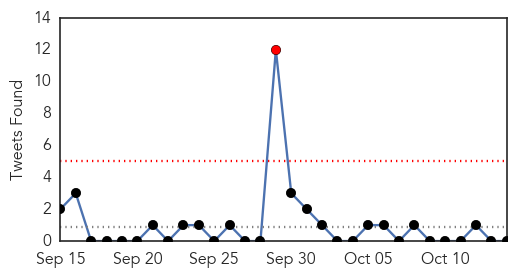

30 Day Trends
Web: 0 alerts, 0 warnings
Twitter: 1 alerts, 0 warnings
Top Articles:
- 0.997
- 61 people isolated in South Korea after recovered Mers patient infected again, East Asia News & Top Stories
- 0.996
- Over 60 People Isolated in S Korea After MERS Reinfection Scare
- 0.996
- Last S. Korea MERS patient rediagnosed with virus
- 0.996
- Last MERS Patient In South Korea Has Been Re-Diagnosed With The Disease Nine Days After Being Discharged From Hospital, Says Health And Welfare Ministry : Korea : koreaportal
- 0.963
- Danger of hospital infections
- 0.954
- Lyme disease endemic sparks concern in Alabama
- 0.932
- Shingles vaccine important for older people
- 0.929
- Lyme Disease: The Lesser Studied Evil
- 0.917
- Chicago Tribune
- 0.917
- Chicago Tribune
- 0.917
- Chicago Tribune
- 0.917
- Chicago Tribune
- 0.917
- Chicago Tribune
- 0.917
- Chicago Tribune
- 0.917
- Chicago Tribune
- 0.869
- 3 die of ‘unknown virus’ in Upper Egypt
- 0.857
- Outbreak linked to A&W cucumbers continues to spread
- 0.853
- State Vet informed community about VS virus at CWC forum Tuesday night
- 0.849
- Great Stories of the Great Plains: Staying healthy in the good old days of 1904
- 0.843
- Mercy Hospital offers free flu shots - Story
- 0.838
- Strep throat spike reported across Central Florida - Story
- 0.835
- Call on govt to revise health staffing system, employ qualified personnel
- 0.828
- Nasal flu vaccine now available for Delaware-area schools
- 0.817
- Enterovirus D68 not associated with higher death rate in children
- 0.784
- The Joy of Travel
- 0.777
- Patients turned away at Katutura hospital
- 0.744
- Vluchtelingencrisis: Europese Commissie brengt verslag uit over voortgang prioritaire maatregelen
- 0.730
- Yemen through the lens: ‘I’ve never seen such intense fighting’
- 0.730
- Turkish PM sacks security chiefs, pays homage to victims
- 0.730
- US to send 300 troops to aid fight against Boko Haram
- 0.730
- Knife attacks continue as Israelis seal off East Jerusalem
- 0.730
- Guinea's main opposition leader Diallo exits presidential race alleging election fraud
- 0.730
- Police stage rare protest in Paris against ‘lax’ judiciary
- 0.730
- France’s main CGT union launches ‘32-hour working week’ campaign
- 0.730
- Clinton comes out swinging in first Democratic debate
- 0.730
- Rousseff accuses Brazil opposition of 'seeking a coup'
- 0.698
- J. Craig Venter Debuts Elite Testing Service Via Health Nucleus
- 0.640
- Lyme Disease Treatment a Growing Concern Among Floridians
- 0.632
- Desdemona Despair
- 0.602
- The deadly disease
- 0.577
- Uganda: Disability and Death from Poor Medical Access
- 0.567
- Foot and Mouth disease persists in Chikwawa
- 0.558
- Congo fever claims two lives in Karachi
- 0.545
- Health board scours Europe to find more than 100 new nurses to fill positions
- 0.541
- International travel leads to outbreak of resistant shigellosis
- 0.527
- Dramatic rise in Lyme disease cases in Alabama prompts state health officer to warn medical professionals in 7 counties
- 0.521
- Head of surgery confronts Snelling live on air
- 0.519
- Interview: Artemisinin-based combination therapy effective in Botswana: experts - Xinhua
- 0.518
- Michigan State Officials Face Mounting Public Scrutiny For Water Crisis In Flint
- 0.518
- Drive by flu clinic open today in Woodstock
Showing top 50 articles...
Top Tweets:
-
No tweets found for Oct 14, 2015
Web/News Articles
Tweets
Article Locations